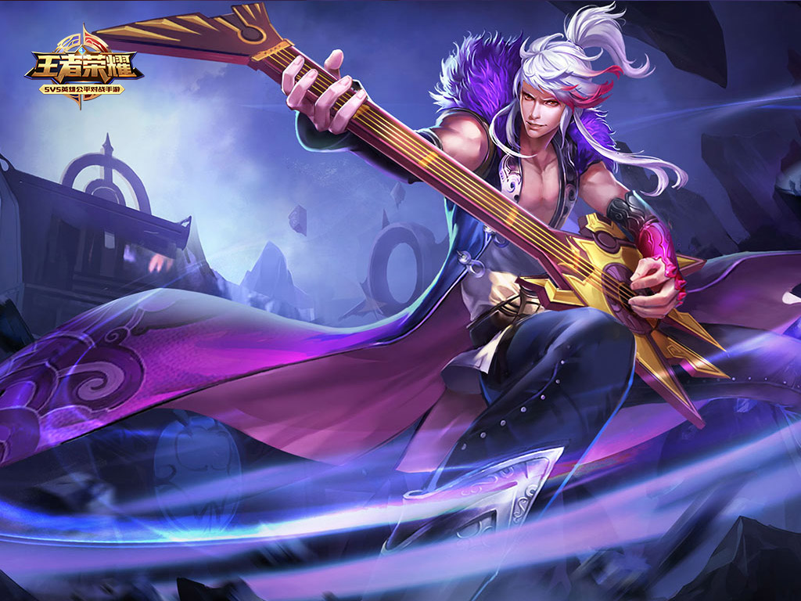
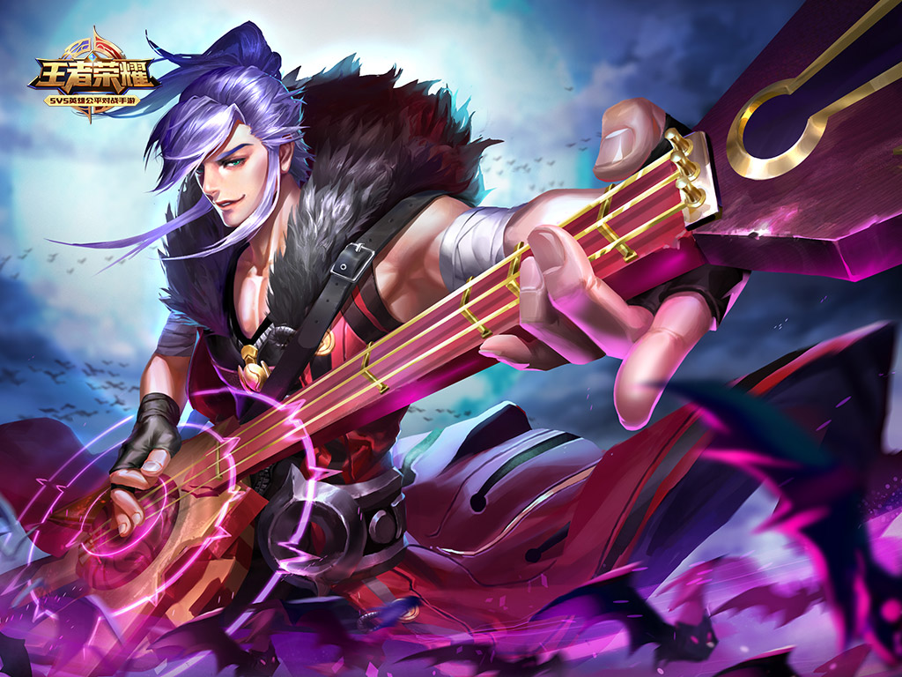

说起大陆最传奇的乐师，人们一定会提到高渐离的名字。
这位天才乐师从初次公开演奏起，就以完美的琴音，狂放不羁的个性征服了人们——尤其是纯情的少女。在声名巅峰时，他夜夜笙歌，将轻松得来的金钱大笔挥霍，身旁围绕着各色美人。
然而放荡的生活没能带给他长久的满足。随着时间的推移，内心产生可怕的空虚。一切来得容易，抛却也并不心疼。忽然“高渐离”这个名字，就像出现时那样突如其来的消失。
他背着心爱的琴开始游历大陆，风餐露宿，日夜不停。去过东南之海，聆听波涛，也登高过泰山，和音松风，这使得他的琴技越发炉火纯青。自如的操纵琴弦和每一个乐音，它们将按照自己的心愿取悦别人，或者——杀死他们。
旅途中某天，高渐离误入长平战场。当他躲藏起来等待厮杀结束时，无意目睹了改变命运的一幕：秦军中出现前所未见的怪物收割了成百上千的生命，牺牲者的鲜血瞬间被吸干。那一刹那，被深深震撼的他认为自己找到了比音乐更重要的使命——杀秦止战。怪物发现了他，但最终他仍然惊险的全身而退。
离开长平后，高渐离四处联络反秦志士，结识了燕国太子丹。这是他邂逅一生中最重要之人的开始……太子丹嫉妒将军樊於期，想雇佣荆轲刺杀他，却不想被荆轲拒绝。恼羞成怒的太子丹将不服从自己的樊於期和荆轲的头颅，双双展示在盛大的宴会上。然而，所谓“荆轲”并不是一个人……以乐师身份参加宴会的高渐离救下了刺杀太子丹后重伤昏迷的刺客。
没想到闻名天下的刺客竟然是少女……大胆又冷血的计划形成了：用美妙乐音治愈荆轲的伤痕，获得她的信任，洗涤她的头脑，安排她像被琴弦操纵的木偶，实践自己的意志。
六个月之后，荆轲如他所愿，走向秦王的所在。
那是舍身的剑法，也是单方面的屠杀。
但是，看到沐浴鲜血的荆轲倒在秦军的尸骸中，为何填充空洞心灵的只有悔恨？
之后世人仅知道的是刺秦以失败告终，当血腥的一天结束，世上再也没有了高渐离和荆轲。与此同时，漂泊的乐师与少女阿珂，则踏上了新的旅途。他们并没有放弃战斗，只是从此之后，他们将只为彼此而战。
“爱情与死亡，永恒的乐章。”
返回顶部 返回首页